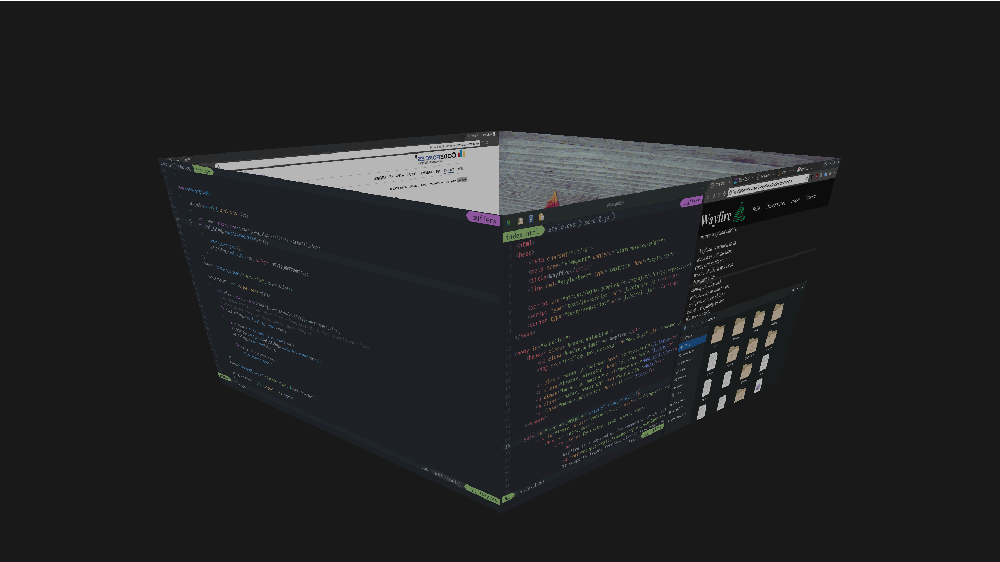
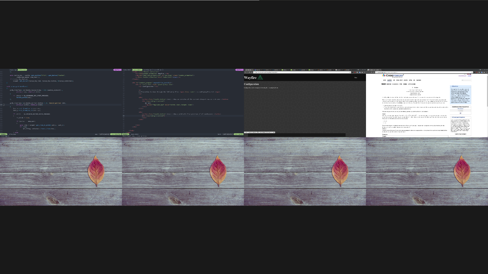

Wayfire
Start
Configuration
Configuration is done through the following file:
~/.config/wayfire.ini
Cube - show an overview of the current viewport row as a 3D cube
me text 
Expo - show a grid with live previews of all workspaces
